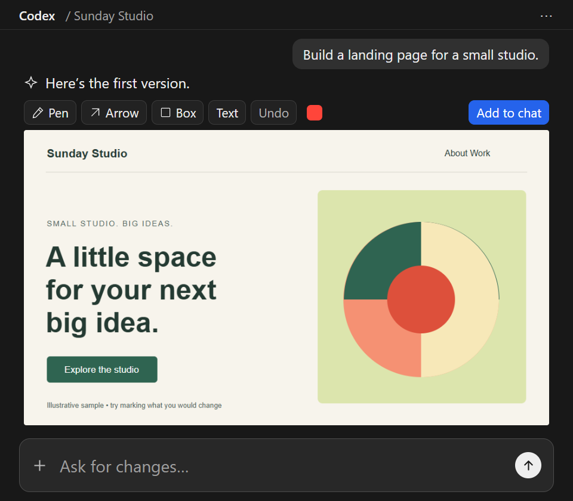
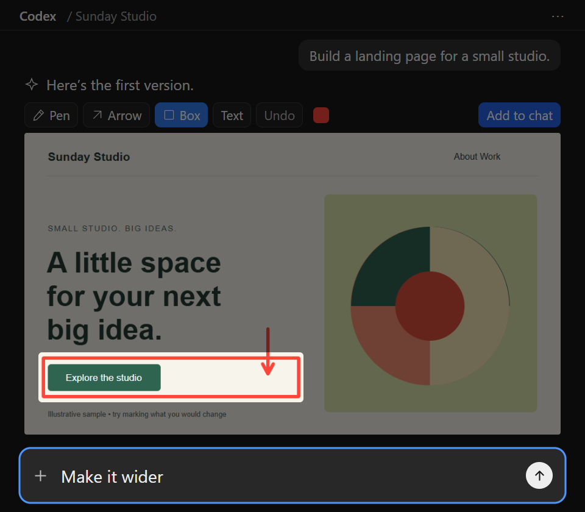
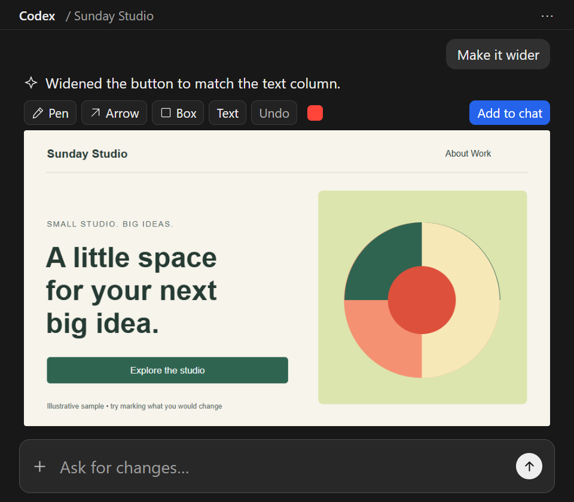

Draw your
next edit.
Draw your feedback right on the AI’s result. Then keep going in the same chat.
Free & open source · v0.4.2
For Codex hosts with inline visualization support. Check requirements
Your marks stay in this demo; nothing is sent to an AI.
Draw directlyin the chat.
Point to what needs changing.
Then explain it in the chat.
1 Start with the result

Codex creates the first version. You spot a button that needs more width.
2 Draw and describe

Box the button, then type “Make it wider” in chat.
3 Review the update

Codex widens the button. Review the result and keep refining.
Illustrative Codex conversation. Drawply captures your feedback; Codex updates the source. Select an image to enlarge.
Point at the part.
Keep the thought.
That button. This spacing. A different texture. Give your feedback where it makes sense.
Start with the result
Drawply tells Codex to present visual results with drawing tools by default. You don’t need to type a skill command each time.
Show what needs changing
Circle a detail, point with an arrow, or add editable text. On layered results prepared by Codex, use Select to adjust objects or drag a box to select several together.
Continue in your chat
Use your usual message box for instructions and reference images. Choose Add to chat, then paste the copied image into your message. If clipboard access is blocked, save and attach the PNG.
Install using Codex.
Copy the request. Paste it into Codex. Let it check and install the skill for you.
No command window or separate installer to run. Codex may ask for permission to download files or add the skill.
Requires inline visualization support and Node.js 20+ available to Codex. Drawply is free; your AI host’s own terms and charges still apply.
Add the Drawply skill
Copy this request into your Codex chat:
Inspect the Drawply skill ZIP I attach, check that this host supports inline visualization, then install it as a personal Codex skill. Ask before replacing an existing Drawply skill or plugin.
You can also download the skill ZIP above and attach it to that request. After installation, Codex can use Drawply automatically for visual results. To request it explicitly:
Use $drawply to show this result for review.Prefer the plugin option?
Download the plugin package, then ask Codex to make it available in your Plugins menu. You choose when to click Install.
Inspect the Drawply plugin ZIP I attach, extract it to a persistent folder, and register its catalog in Codex without installing it. Ask before replacing any existing Drawply registration. Tell me where to click Install in the Plugins menu.
Use either the skill or the plugin to avoid duplicate entries. This local package is not a public plugin-directory listing.
Remove Drawply
Ask Codex to remove the standalone Drawply skill, or uninstall the plugin through Plugins. Your saved drawings and conversations are kept.
Before you
jump in.
Will it open on every AI image?
Drawply is configured for automatic selection when Codex creates or presents visual results. You don’t need to type $drawply each time. This remains an agent default, not a guaranteed hook on every image. Installation cannot add inline rendering to unsupported hosts.
Does drawing change the actual design?
Your drawing is feedback on a visual result. The AI then interprets your request and edits the underlying project. On results with source layers prepared by Codex, Select can move, resize and rotate objects or groups in the review. Codex then applies your request to the actual source. Uploaded flat images support drawing, without automatic object recognition.
How does the AI receive my marks?
Supported hosts may share saved annotation state with the model, but delivery is best-effort. For an exact reference, Add to chat copies the marked PNG where clipboard access is allowed; paste it into the chat alongside your instructions. The editor cannot paste automatically. If copying is blocked, use Save drawing and attach the PNG.
Where do my images and notes go?
The plugin has no Drawply server or telemetry. Its generated review contains your image and local file path; annotation state may be shared with your AI host. Chats, attachments and saved state follow that host’s data policies. Read the privacy notice for the distinction.
Can I change or share the code?
Yes. The MIT license permits use, modification and redistribution, including commercial use, while preserving the license and copyright notice. The project comes without a warranty, subject to rights that applicable law does not allow to be excluded.
Made to be passed around.
Free to use. Open to improvement. The download contains the source, so you can inspect it, change it, and make it yours.